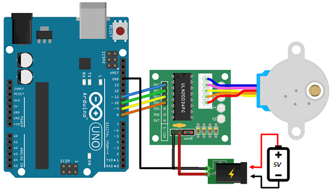

Moteur Pas-à-Pas
Introduction

- Un moteur pas à pas est un type de moteur électrique qui se déplace par pas discrets plutôt qu'en rotation continue comme les moteurs classiques. Cette caractéristique permet un contrôle précis de la position, ce qui en fait un choix idéal pour des applications nécessitant une grande précision, telles que les imprimantes 3D, les robots, et les équipements de précision industrielle
- Le Stator est la partie fixe. Il est constitué de 4 bobine A, B, C, D. Ces bobines seront alimentées l'une après l'autre pour faire avancer le moteur pas par pas
- Le rotor est la partie mobile. Il est constitué d'un aimant permanent. Il se déplace en réponse aux champs magnétiques créés par les bobines du stator
- Si on observe la photo, on constate que le rotor est denté ainsi que chaque noyau de bobine. Quand on alimente une bobine, le champs magnétique créé attire les dents du rotor qui s'alignent sur les dents de la bobine alimenté. Les dent de la bobine suivante sont très légèrement décalées par rapport à celles du rotor. Ce décalage correspond au pas du moteur. Quand on alimente la bobine suivante, le rotor se déplace d'un pas pour aligner les dents.
- En résumé, Chaque fois que l'alimentation passe d'une bobine à l'autre, le moteur avance d'un Pas
- Le nombre de pas par révolution d'un moteur dépend du nombre de dents du rotor et du stator. Les
moteurs courants dans le commerce sont:
- Moteur 100 pas: 1 pas = 3.6 °
- Moteur 200 pas: 1 pas = 1.8 °
- Moteur 400 pas: 1 pas = 0.9 °
- On peu faire du microstepping en utilisant des driver adaptés,
- Certains moteur ont des réducteurs mécaniques qui augmente considérablement leur nombre de pas comme le très populaire 28BYJ48

Le circuit ULN2003
L'ULN2003 est un circuits intégrés de commande de moteur Pas-à-Pas très populaire. Il est composé d'un réseau de 7 commutateurs (transistors Darlington), chacun capable de piloter des charges allant jusqu'à à 500mA et 50V.

Chaque commutateur permet de controller une bobine du moteur Pas-à-Pas. Pour l'alimentation du moteur, il faut prévoir un Volt de plus à cause de la chute de tension (Vce) dans les commutateur. Les diodes de récupération sont intégrées dans le circuit

Le Module ULN2003

Le module ULN2003 facilite grandement la connectique avec l'Arduino, le moteur et l'alimentation. Il possède:
- Un connecteur 5 pins pour brancher le moteur,
- 2 pins pour brancher l'alimentation du moteur,
- 4 pins IN1 ... IN4 pour controller l'alimentation des bobines à partir de l'Arduino,
- 4 LEDs pour suivre l'état des bobines.
Couple Normal, Couple Fort
- Le mode couple normal consiste à alimenter les bobines l'une apres l'autre
- Le mode couple fort consiste à alimenter les bobines deux par deux. On obtient un couple plus fort mais la consommation de courant est doublée


Exemple basique
Dans cet exemple on va utiliser le moteur pas-à-pas 28BYJ-48. Ce moteur existe en plusieurs versions. Nous utilisons une version 5V, 32 pas, réducteur 1/64, durée min d'un pas : 2 ms
- Alimentation 5V de préférence 6V pour compenser la chute de tension dans l'ULN2003
- 32 pas par révolution. Réducteur mécanique 1/64. On obtient 32*64 = 2048 pas par révolution. Un pas = 360° / 2048 = 0.17°
- On va faire un programme pour faire un tour entier dans un sens puis un tour entier dans l'autre sens pour revenir à la position initiale
- On va avancer d'un pas toutes les 2ms ce qui correspond à un tour en 2048 * 2ms = 4048 ms ≈ 4 secondes. Ne pas oublier que ce moteur a un réducteur mécanique, n'essayez pas de le faire tourner trop vite
- La librairie Stepper semble avoir quelques dysfonctionnements. Nous allons écrire deux
fonctions pour controller le moteur:
- stepperInit(tork) : Permet d'Initialiser les broches de control et choisir
entre les modes couple Normal ou couple Fort.
- tork : LOW (ou 0) ==> Couple normal. HIGH (ou 1)==> Couple fort
- stepperStep(steps, steptime) : Permet de faire tourner le
moteur en avant ou en arrière.
- steps : Nombre de pas. Si steps est positif, le moteur tourne dans le sens avant, s'il est négatif, le moteur tourne dans le sens arrière. (type : Entier)
- steptime : Durée d'un pas en ms. Ce paramètre permet de fixer la vitesse de rotation. Ce paramètre est de type réel (float), on peut donner des valeurs avec décimale
- stepperInit(tork) : Permet d'Initialiser les broches de control et choisir
entre les modes couple Normal ou couple Fort.
#define PINA 11
#define PINB 10
#define PINC 9
#define PIND 8
void setup() {
stepperInit(LOW);
}
void loop() {
stepperStep(2048, 3);
delay(1000);
stepperStep(-2048, 3);
delay(1000);
}
void stepperInit(byte tork) {
// Initialiser les commandes
// tork = LOW ==> couple faible
// tork = HIGH ==> couple fort
pinMode(PINA, OUTPUT);
pinMode(PINB, OUTPUT);
pinMode(PINC, OUTPUT);
pinMode(PIND, OUTPUT);
digitalWrite(PINA, HIGH);
digitalWrite(PINB, tork);
digitalWrite(PINC, LOW);
digitalWrite(PIND, LOW);
}
void stepperStep(int32_t steps, float step_time_ms) {
// Tourner de steps pas au rythme de step_time_ms par pas
// lire l'état actuel des bobines
byte A, B, C, D, S;
A = digitalRead(PINA) ;
B = digitalRead(PINB) ;
C = digitalRead(PINC) ;
D = digitalRead(PIND) ;
//commencer le décalage
if (steps > 0) {
for (int i = 0; i < steps; i++) {
S = D;
D = C;
C = B;
B = A;
A = S;
digitalWrite(PINA, A);
digitalWrite(PINB, B);
digitalWrite(PINC, C);
digitalWrite(PIND, D);
if(step_time_ms > 1)delay(step_time_ms);
else delayMicroseconds(step_time_ms * 1000 - 27);
}
} else {
for (int i = 0; i < abs(steps); i++) {
S = A;
A = B;
B = C;
C = D;
D = S;
digitalWrite(PINA, A);
digitalWrite(PINB, B);
digitalWrite(PINC, C);
digitalWrite(PIND, D);
if(step_time_ms > 1)delay(step_time_ms);
else delayMicroseconds(step_time_ms * 1000 - 27);
}
}
}
Exemple: Commande à partir du moniteur Série
- Dans cet exemple, on va controller le moteur à partir de commandes tapées sur le moniteur Série. Chaque commande doit être validé par un "Retour Ligne" (CR, LF ou les deux).
- Le programme propose deux commandes, vous pouvez en ajouter d'autres:
- stepms param : Permet de définir la durée d'un pas en ms. Le paramètre type float autorise l'utilisation de valeur réelles
- step param : Permet de faire tourner le moteur (en avant ou en arrière) du nombre de pas spécifié.
- Exemples de commandes :
- stepms 4.7 ==> Définir la durée du pas à 4.7 ms
- step 100 ==> Tourner en avant de 100 pas"
- step -200 ==> Tourner en arrière de 200 pas"
#define PINA 11
#define PINB 10
#define PINC 9
#define PIND 8
void setup() {
Serial.begin(9600);
Serial.setTimeout(5000);
Serial.println("Taper une commande suivie d'un paramètre :");
Serial.println("stepms 4.7 ---> Définir la durée d'un pas à 4.7 ms");
Serial.println("step 100 ---> En avant de 100 pas");
Serial.println("step -200 ---> En arrière de 200 pas");
Serial.println("Valider par Enter (CR, LF ou les deux)");
stepperInit(LOW);
}
float T = 50; // stepTime par défaut
void loop() {
if (Serial.available()) {
String cmd = Serial.readStringUntil(' ');
float param = Serial.parseFloat();
clearInputBuffer();
Serial.println("----> " + cmd + " " + String(param));
if(cmd == "step") stepperStep(param,T);
else if (cmd == "stepms")T = param;
else Serial.println("Mauvaise commande");
}
}
void stepperInit(byte tork) {
// Initialiser les commandes
// tork = LOW ==> couple faible
// tork = HIGH ==> couple fort
pinMode(PINA, OUTPUT);
pinMode(PINB, OUTPUT);
pinMode(PINC, OUTPUT);
pinMode(PIND, OUTPUT);
digitalWrite(PINA, HIGH);
digitalWrite(PINB, tork);
digitalWrite(PINC, LOW);
digitalWrite(PIND, LOW);
}
void stepperStep(int32_t steps, float step_time_ms) {
// Tourner de steps pas au rythme de step_time_ms par pas
// lire l'etat actuel des bobines
byte A, B, C, D, S;
A = digitalRead(PINA) ;
B = digitalRead(PINB) ;
C = digitalRead(PINC) ;
D = digitalRead(PIND) ;
//commencer le décalage
if (steps > 0) {
for (int i = 0; i < steps; i++) {
S = D;
D = C;
C = B;
B = A;
A = S;
digitalWrite(PINA, A);
digitalWrite(PINB, B);
digitalWrite(PINC, C);
digitalWrite(PIND, D);
if(step_time_ms > 10)delay(step_time_ms);
else delayMicroseconds(step_time_ms * 1000 - 27);
}
} else {
for (int i = 0; i < abs(steps); i++) {
S = A;
A = B;
B = C;
C = D;
D = S;
digitalWrite(PINA, A);
digitalWrite(PINB, B);
digitalWrite(PINC, C);
digitalWrite(PIND, D);
if(step_time_ms > 10)delay(step_time_ms);
else delayMicroseconds(step_time_ms * 1000 - 27);
}
}
}
void clearInputBuffer() {
do {
delay(2);
Serial.read();
} while (Serial.available());
}